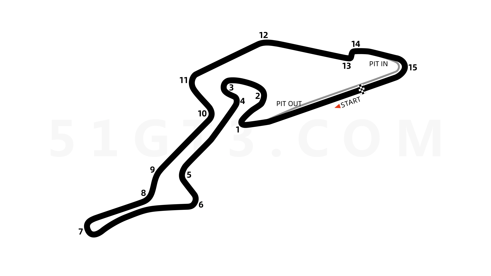
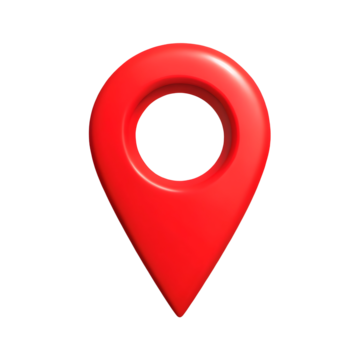

Circuito Nürburgring
¿Curiosidades?
La longitud total de Nürburgring es de unos asombrosos 28,3 kilómetros. La parte más larga la ocupa el legendario Nürburgring Nordschleife, que originalmente tenía 22,8 kilómetros de longitud.
¿Donde se ubica?
Nürburgring es un autódromo ubicado alrededor del pueblo de Nürburg, estado de Renania-Palatinado, Alemania.

Galeria


¿Interesado en correr?
Nurbürgring conocido también como "El Infierno Verde", es el lugar donde los sueños de cualquier apasionado del automovilismo se hacen realidad. Con más de 20 kilómetros de asfalto serpenteante, este circuito no es solo una pista; es una prueba de habilidad, valentía y precisión.
Camina por el mismo asfalto que han recorrido leyendas como Ayrton Senna, Jackie Stewart y Michael Schumacher. Correr en Nürburgring es un viaje en el tiempo, una oportunidad para vivir la historia del automovilismo en cada metro de la pista.
Si te gusta la adrenalina y te gusta conducir, no te pierdas la oportunidad de poder correr en uno de los mejores circuitos del mundo.